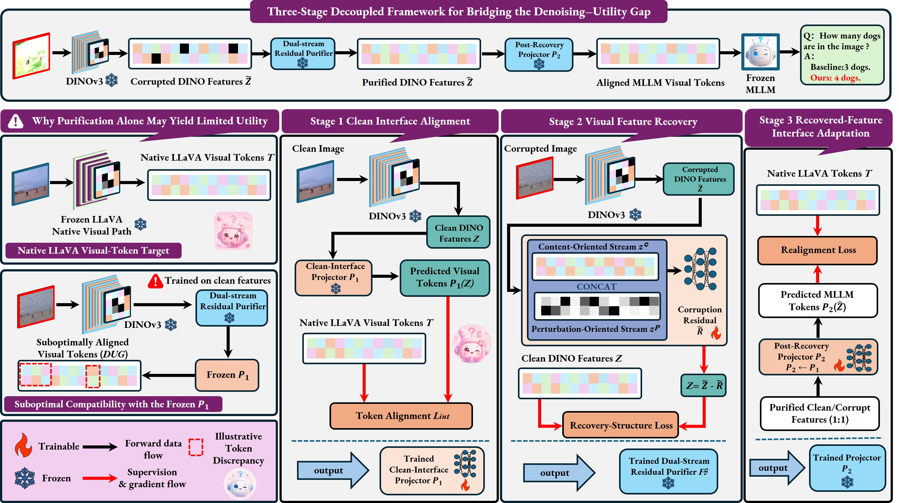

Beyond Feature Fidelity
Recovery and Readout Adaptation in Multimodal Large Language Models
1 Harbin Engineering University · 2 South China Normal University · 3 Heilongjiang University of Science and Technology · 4 Sun Yat-sen University · 5 University of Auckland · 6 Nanyang Technological University
Read the paperGitHub codeExplore results
Abstract
Feature recovery targets the geometry of a clean visual representation; multimodal prediction depends on how a readout uses that representation. We examine this distinction in controlled systems connecting a shared visual encoder to frozen language-side models through learned readouts. Across four downstream models and nine benchmarks, recovery has mixed effects under a clean-trained readout. Readout adaptation improves the reported utility in most evaluated model–benchmark combinations, yet adapting directly to raw features is often competitive with or better than adapting after explicit recovery. In a GQA control, additional readout training on recovered clean features raises the score from 58.82 to 59.35, while adaptation using recovered clean and corrupted features reaches 59.67. This limits attribution of the entire adaptation gain to distribution matching. Separate fidelity analyses characterize task-specific and task-agnostic recovery settings. Together, the results motivate evaluating the representation–readout pair through distinct measurements of feature fidelity, fixed-readout utility, and adapted-readout utility.
Method
A shared DINOv3 encoder produces visual tokens. A recovery module transforms those tokens, and a model-specific readout maps them into the space used by the frozen language model. Crossing raw and recovered features with frozen and adapted readouts gives four controlled conditions.

Results
These counts compare point estimates in the paper’s main table. Expand a model to inspect all nine benchmarks.
LLaVA-1.5
| Condition | GQA | TextVQA | TallyQA | POPE | VQAv2 | VizWiz | MMStar | BLINK | NaturalBench |
|---|---|---|---|---|---|---|---|---|---|
| Raw-Frozen | 58.99 | 9.96 | 54.00 | 82.42 | 65.45 | 17.83 | 27.53 | 36.12 | 46.86 |
| Recovered-Frozen | 58.82 | 9.57 | 49.01 | 80.91 | 64.62 | 17.29 | 27.38 | 36.14 | 45.69 |
| Raw-Adapted | 59.74 | 10.11 | 55.29 | 82.47 | 66.71 | 18.38 | 28.16 | 35.77 | 47.42 |
| Recovered-Adapted | 59.67 | 9.97 | 54.74 | 82.18 | 66.53 | 18.28 | 27.71 | 35.12 | 46.92 |
Qwen2.5-VL
| Condition | GQA | TextVQA | TallyQA | POPE | VQAv2 | VizWiz | MMStar | BLINK | NaturalBench |
|---|---|---|---|---|---|---|---|---|---|
| Raw-Frozen | 48.34 | 7.62 | 53.97 | 75.24 | 60.83 | 17.23 | 34.22 | 38.52 | 48.45 |
| Recovered-Frozen | 47.48 | 6.82 | 48.62 | 74.73 | 57.50 | 13.72 | 33.84 | 37.82 | 46.59 |
| Raw-Adapted | 49.66 | 8.70 | 55.38 | 75.87 | 63.40 | 20.06 | 35.53 | 38.79 | 49.61 |
| Recovered-Adapted | 49.84 | 8.17 | 55.82 | 76.17 | 62.97 | 18.43 | 35.24 | 39.05 | 49.28 |
Qwen3.5
| Condition | GQA | TextVQA | TallyQA | POPE | VQAv2 | VizWiz | MMStar | BLINK | NaturalBench |
|---|---|---|---|---|---|---|---|---|---|
| Raw-Frozen | 54.10 | 10.87 | 60.29 | 83.18 | 68.63 | 20.24 | 39.49 | 41.47 | 62.79 |
| Recovered-Frozen | 53.79 | 9.98 | 58.29 | 82.87 | 68.05 | 17.88 | 36.91 | 41.14 | 61.47 |
| Raw-Adapted | 54.72 | 11.17 | 60.84 | 83.14 | 69.59 | 21.46 | 40.44 | 42.22 | 63.30 |
| Recovered-Adapted | 54.78 | 11.23 | 60.76 | 83.42 | 69.37 | 20.75 | 39.64 | 41.07 | 63.18 |
OneVision-2
| Condition | GQA | TextVQA | TallyQA | POPE | VQAv2 | VizWiz | MMStar | BLINK | NaturalBench |
|---|---|---|---|---|---|---|---|---|---|
| Raw-Frozen | 19.76 | 10.11 | 32.77 | 77.16 | 23.36 | 11.30 | 34.44 | 24.88 | 46.77 |
| Recovered-Frozen | 21.05 | 10.19 | 33.99 | 77.01 | 24.57 | 10.74 | 33.42 | 25.58 | 44.50 |
| Raw-Adapted | 20.93 | 10.44 | 35.64 | 77.84 | 26.05 | 12.32 | 35.80 | 26.55 | 47.71 |
| Recovered-Adapted | 21.09 | 10.38 | 36.67 | 77.73 | 26.19 | 11.54 | 35.78 | 25.43 | 47.16 |
Native CLIP follow-up
A separate evaluation on 2,400 GQA images used LLaVA-1.5’s original CLIP encoder and pretrained projector. On corrupted inputs, recovery improved token cosine by 0.02394. Frozen accuracy changed by −0.125 percentage points (95% CI −0.341 to +0.096). Intervals use paired image clusters and condition on three training seeds.
Download follow-up contrasts (CSV)